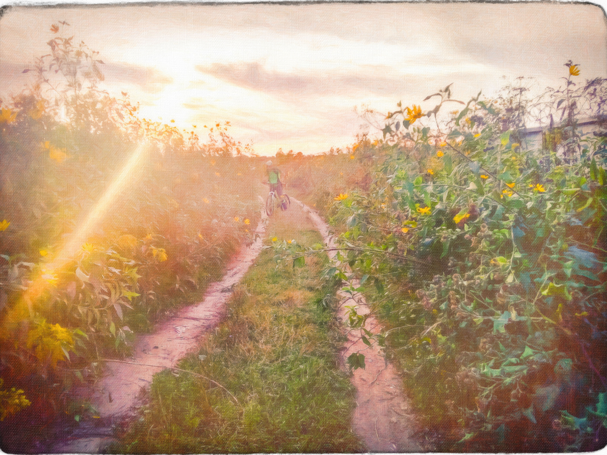
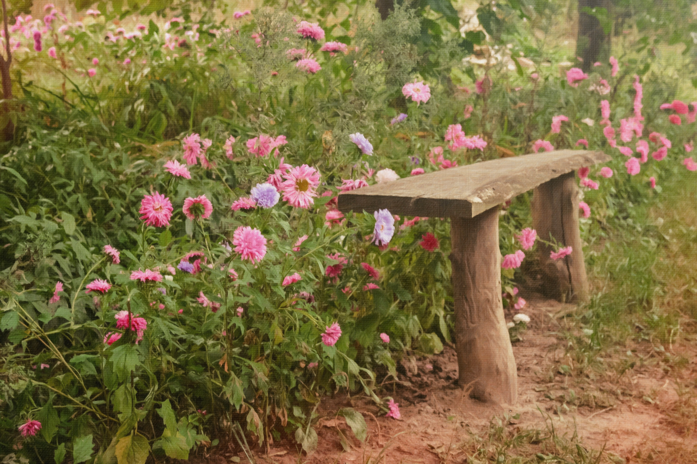
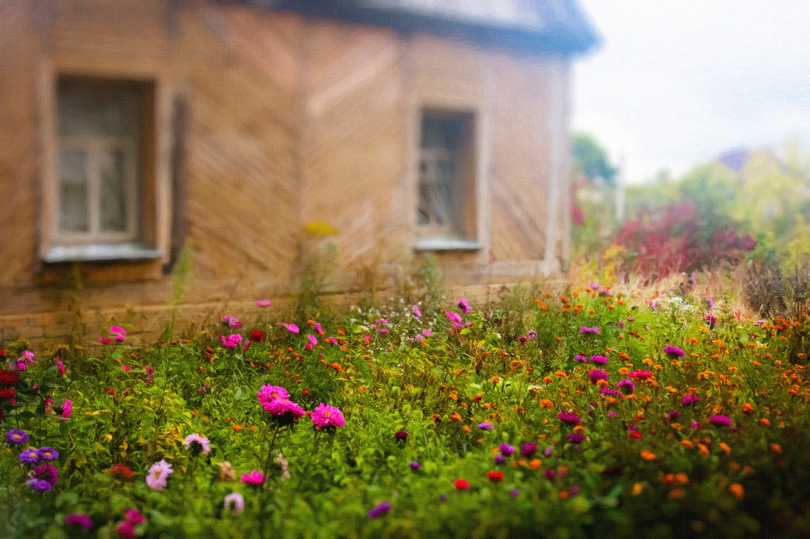
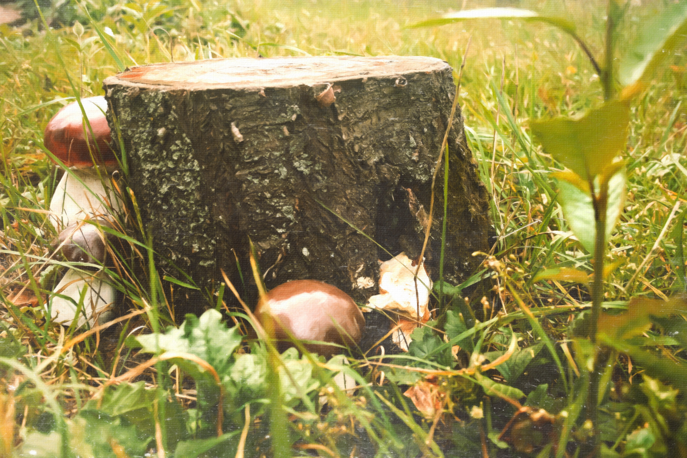
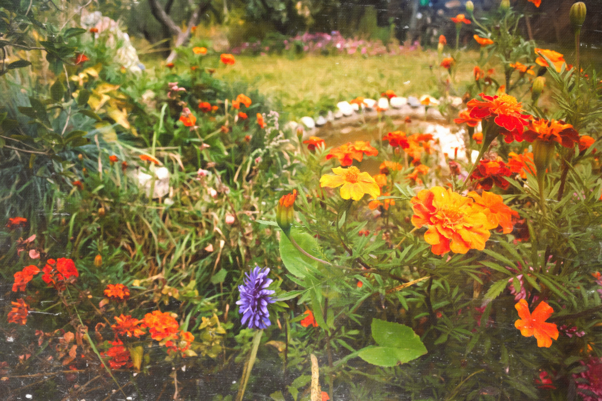
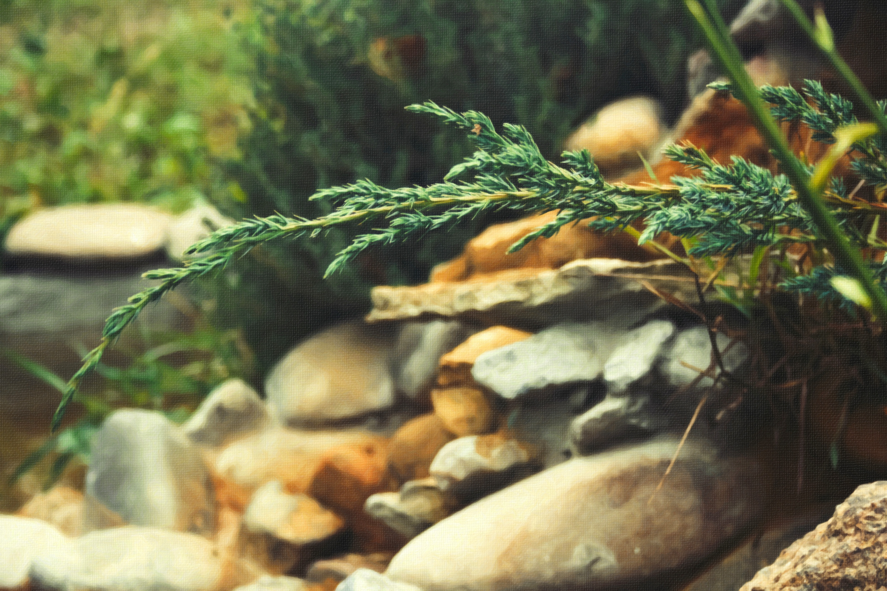

Композиция
Одним из ключевых аспектов хорошей фотографии - композиция. Распределение элементов в кадре таким образом,
чтобы создавать привлекательные и уравновешенные изображения. Экспериментируйте с различными техниками, такими как правило третей, линии направления, кадрирование
wiki

Использование света
Понимание и использование света является фундаментальным для фотографии. Экспериментируйте с различными источниками света, направлениями освещения и временем суток, чтобы создать интересные эффекты и настроение на ваших фотографиях.
genr

Глубина резкости
Глубина резкости определяет, насколько много объектов в кадре будет в фокусе. Используйте эту технику, чтобы привлечь внимание к определенным элементам и создать интересные эффекты размытия на заднем плане.
term

Экспозиция
Экспозиция относится к тому, насколько ярко или темно изображение.
Используйте режимы экспозиции вашей камеры (автоматический, полуавтоматический или ручной режим)
(A, P, M), manual(M), manual(P), manual(A) для контроля над этим параметром и достижения желаемых эффектов.
trend

Использование цвета
Цвет является мощным инструментом в фотографии. Экспериментируйте с насыщенностью, контрастностью и тоном цвета, чтобы создавать насыщенные и выразительные изображения. Также обратите внимание на цветовую гармонию и контраст в кадре.
blog

Рабочая обстановка
Рабочая обстановка относится к окружающим условиям, в которых вы снимаете.
Будьте внимательны к элементам, которые могут улучшить или испортить фотографию.
Удаляйте ненужные объекты из кадра, создавайте интересный фон.
social